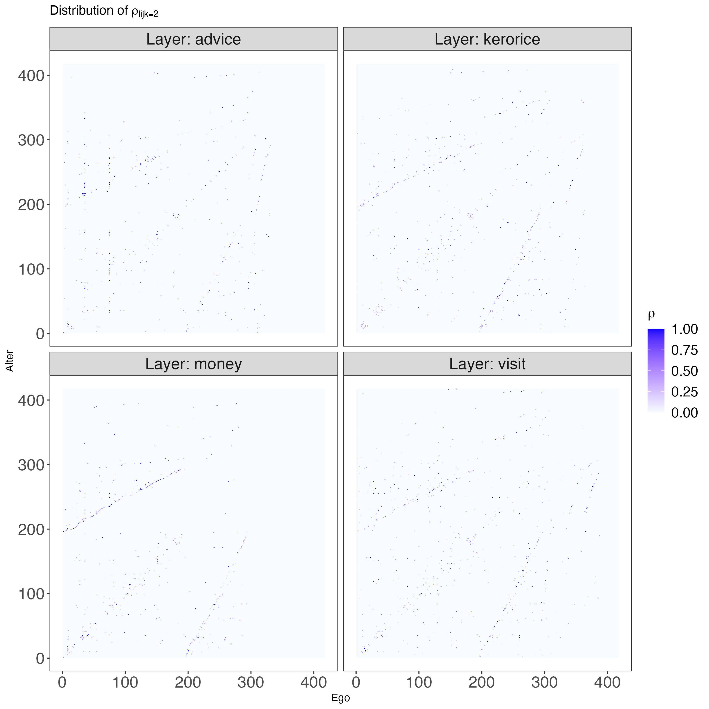
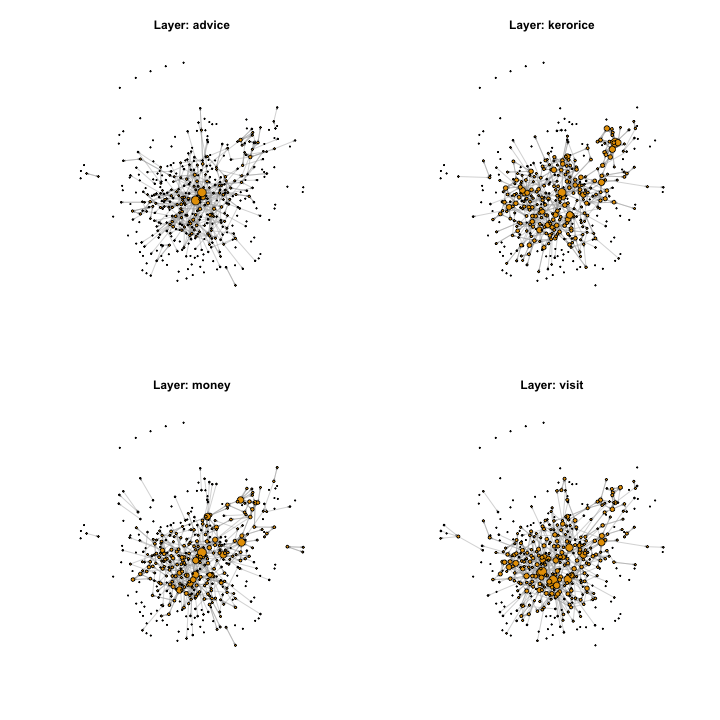

💻 Tutorial 03: Extracting point estimates from the posterior distribution
VIMuRe v0.1.3 (latest)
If you use VIMuRe in your research, please cite (De Bacco et al. 2023).
TLDR: By the end of this tutorial, you will be able to:
- Extract point estimates of latent network structure using the mean of the posterior distribution
- Visualize the resulting network using \(\rho\), a measure of edge strength
- Sample from the posterior distribution and obtain uncertainty estimates
- Compare different models using information criteria
Found an interesting use case for VIMuRe? Let us know! Open a discussion on our GitHub repository.
⚙️ Setup
Import packages
library(tidyr)
library(dplyr)
library(magrittr)
library(ggplot2)
library(reshape2)
library(igraph)
library(vimure)⚠️ Ensure you have installed the latest version of VIMuRe before running this tutorial. Follow the 📦 Installation instructions if you haven’t already.
📥 Step 1: Ensure you have suitable data and a fitted VIMuRe model
This tutorial assumes that you have completed 💻 Tutorial 1 and 💻 Tutorial 02 and that, therefore, you have an edgelist data frame and a fitted model object called model loaded in your Python environment.
We have selected a particular village to focus on. The dataset contains information on four different types of relationships: money, advice, visit and kerorice. We stored all the data in a single data frame, edgelist, which looks like this:
set.seed(100) # for reproducibility
edgelist %>% dplyr::sample_n(size = 10, replace = FALSE)| ego | alter | reporter | tie_type | layer | weight |
|---|---|---|---|---|---|
| 107303 | 107307 | 107307 | helpdecision | advice | 1 |
| 116402 | 115702 | 116402 | keroricecome | kerorice | 1 |
| 103202 | 117301 | 103202 | giveadvice | advice | 1 |
| 116201 | 110401 | 116201 | keroricecome | kerorice | 1 |
| 114606 | 109701 | 109701 | keroricego | kerorice | 1 |
| 101302 | 116201 | 101302 | visitcome | visit | 1 |
| 111204 | 110701 | 111204 | lendmoney | money | 1 |
| 108304 | 111502 | 108304 | keroricecome | kerorice | 1 |
| 117301 | 113901 | 113901 | borrowmoney | money | 1 |
| 106201 | 116105 | 106201 | keroricecome | kerorice | 1 |
We then ran VIMuRe on this data frame to fit a latent network model:
library(vimure)
# Run the model
model <- vimure(edgelist)If you have both objects in your environment, you are ready to go!
📊 Step 2: Interpreting the variable \(\rho\)
In this step, our main focus is to analyze the posterior distribution of the latent variable known as rho, which is included in the list of posterior estimates of the model.
rho = posterior_estimates <- model$get_posterior_estimates()$rho
dim(rho)4 417 417 2The variable rho is represented as a tensor with dimensions L x N x N x K. Each entry in the tensor can be denoted as \(\rho_{lijk}\), which corresponds to the geometric expectations of the probability of a directed tie with weight \(k-1\) existing between nodes \(i\) and \(j\) on a specific layer \(l\).
A note about the parameter \(K\)
The final dimension of the tensor, denoted by \(K\), represents the strength of a tie. By default, the model assumes that the interest is in the presence or absence of ties rather than their weight, resulting in a default value of \(K=2\). Consequently, for each potential edge, there are two values of \(\rho\): \(\rho_{lijk=1}\) and \(\rho_{lijk=2}\), corresponding to edges with weights 0 and 1 (\(k-1\)) respectively.
To make this clearer, let’s consider a specific example. Suppose we want to determine the probability of a directed tie with weight 1 existing between nodes 10 and 15 on layer 1 (‘advice’) of our network. We can examine the following entry in the tensor:
# rho for layer 1, ego 10, alter 15
rho[1, 11, 16, ] The result would be:
[1] 1.000000e+00 4.135746e-13This suggests that the model assigns a high probability (approximately 100%) to the absence of a directed tie between nodes 10 and 15 on layer 1 (\(\rho_{lijk=1} \approx 1\)). Conversely, it assigns a low probability (approximately 0%) to the presence of a directed tie between nodes 10 and 15 on layer 1 (\(\rho_{lijk=2} \approx 0\)). Based on this, we can conclude that node 10 does not provide advice to node 15.
If you are modelling weighted networks, you can specify a different value for \(K\), as shown below. Just note that K must be an integer.
# Fit the model with a different value for K
model <- vimure(edgelist, K=10)Visualising rho
Since the probability of \(K=1\) and \(K=2\) are complementary, we can plot the probability of a directed tie existing between nodes \(i\) and \(j\) on layer \(l\) as a function of \(\rho_{lijk=2}\). But before we proceed to the plot, let’s take a look at the summary statistics of the values of \(\rho\) per layer:
Show code
# The code below extracts the values of rho for k=2
# and calculates summary statistics for each layer
apply(rho[,,,2], 1, function(mat){summary(c(mat))}) [,1] [,2] [,3] [,4]
Min. 1.422001e-13 1.543201e-13 1.459111e-13 1.438627e-13
1st Qu. 3.610989e-13 5.066806e-13 4.103419e-13 4.457248e-13
Median 4.647597e-13 7.397324e-13 6.378388e-13 6.876110e-13
Mean 2.119759e-03 2.324725e-03 2.187926e-03 2.538284e-03
3rd Qu. 6.281224e-13 8.889993e-13 8.399095e-13 8.608209e-13
Max. 1.000000e+00 9.998318e-01 9.998739e-01 1.000000e+00The expected values of \(\rho\) are very small, with a very narrow interquartile range and a mean of approximately 0.002. Observe how the minimum value is close but never truly zero, which is a consequence of the Bayesian approach. The inferred network is sparse, as can be expected from a social network of this type.
Let’s look at how the values of \(\rho\) are distributed across layers. We can do this by plotting the distribution of \(\rho_{lijk=2}\) for each layer:
Show code
# Create a data frame with the values of rho for k=2
rho_df <- reshape2::melt(rho[,,,2]) %>%
setNames(c("Layer", "Ego", "Alter", "Value")) %>%
mutate(Layer = factor(Layer, labels = model$layerNames))
# Plot the distribution of rho for k=2
g <- ggplot(rho_df, aes(x = Ego, y = Alter, fill = Value)) +
geom_tile() +
facet_wrap(~ Layer, labeller = label_both) +
scale_fill_gradient(low = "#f7fbff", high = "blue", name = expression(rho), limits=c(0,1)) +
labs(x = "Ego", y = "Alter", title = expression(paste("Distribution of ", rho[{lijk==2}]))) +
theme_bw() +
theme(axis.text=element_text(size=rel(1.5)),
legend.text=element_text(size=rel(1.3)),
legend.title=element_text(size=rel(1.3)),
strip.text=element_text(size=rel(1.5)),
plot.background = element_rect(fill = "transparent", colour = NA),
panel.grid.minor = element_blank(),
panel.grid.major = element_blank())
The plots above give us an idea of how sparse the network is, but without any meaningful node ordering, it’s hard to see its structure. In the next section, we’ll use \(\rho_{lijk=2}\) as a measure of edge strength and treat it as a point estimate for our model. This will help us get a clearer picture of this multi-layered network.
🎲 Step 3: Obtaining a simple point estimate
We can treat the probability values represented by \(\rho_{lijk=2}\) directly as a point estimate, but since most of the entries are very small and none of them are zero, this would lead to a dense network. Instead, it might be more appropriate to apply a thresholding approach and set lower values to zero.
However, determining the appropriate threshold value \(t_{\rho}\) is not as straightforward as it initially seems. While a suggestion of setting \(t_{\rho}=0.5\) may arise based on the assumption of complementarity between \(\rho_{lijk=2}\) and \(\rho_{lijk=1}\), our research paper (De Bacco et al. 2023, 10–11) reveals the need for adjusting the threshold based on the inferred mutuality, \(\eta_{est}\) (represented by the latent variable \(\nu\)), to achieve a similar level of reciprocity — a network property of interest — as observed in the ground truth network. In other words, tailoring the threshold becomes necessary to ensure that the inferred network accurately captures the desired network property.
In the paper, we found that the threshold \(t_{\rho}\) should be set to \(t_{\rho} = 0.33 \times \eta_{est} + 0.10\) was a good heuristic to capture reciprocity in simulated synthetic networks with reciprocity. Let’s use this same value here to obtain a point estimate of our network:
threshold <- 0.33 * model$get_posterior_estimates()$nu + 0.10
threshold0.3075572We can then apply the threshold to the values of \(\rho_{lijk=2}\) to obtain a point estimate of the network:
# Apply the threshold
rho_point_estimate <- rho[,,,2] > thresholdTo get the network to look consistent across layers, let’s create a layout from the union of all nodes and edges across layers:
igraph::graph_from_adjacency_matrix(apply(rho_point_estimate, 2:3, sum) > 0) %>%
igraph::layout_with_fr() -> layout
dim(layout)417 2Finally, we can plot the network using the layout and the thresholded values of \(\rho_{lijk=2}\):
Show code
# Load the igraph library
library(igraph)
# Create a list of graphs from the rho point estimate
num_layers <- dim(rho_point_estimate)[1]
gs <- lapply(1:num_layers, function(l) {
graph_from_adjacency_matrix(as.matrix(rho_point_estimate[l,,]), mode = "directed")
})
max_degree <- max(sapply(gs, function(g) max(degree(g))))
# Create a 2 x 2 plot layout
par(mfrow = c(2,2))
# Loop over the layers
for (l in 1:num_layers) {
g <- gs[[l]]
degree <- degree(g)
# Scale degree to the interval [4 - 12]
degree <- degree / max(degree) * 7 + 1
plot(g,
vertex.size = degree,
vertex.label=NA,
edge.width = 0.6,
edge.arrow.size = 0.1,
opacity=0.7,
layout=layout,
main = paste("Layer:", model$layerNames[l]))
}
Next steps
🚧 TODO: Which network properties can we infer from the networks obtained above?
🚧 TODO: How does that compare to \(t_{\rho}=0.5\)?